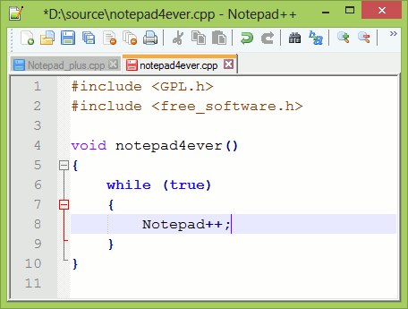

Notepad++

Probablement l’éditeur de texte avancé le plus populaire sur le marché, Notepad++ se présente sous la forme d’un ensemble compact, sans frais et avec des composants d’édition puissants. Il est distribué gratuitement sous
Licence Publique Générale, ce qui signifie que tous les développeurs et créateurs de contenu peuvent profiter de l’éditeur de texte immédiatement après un téléchargement rapide. Notepad++ fonctionne sous Microsoft Windows,
et il s’efforce d’utiliser moins de puissance de calcul qu’un éditeur de texte moyen.
Notepad++ se distingue notamment par le fait qu’il a déjà été traduit dans plus de 80 langues, ce qui lui permet d’être accessible partout dans
le monde. De plus, vous pouvez traduire Notepad++ dans votre langue maternelle si vous ne trouvez pas votre langue dans la liste des traductions.